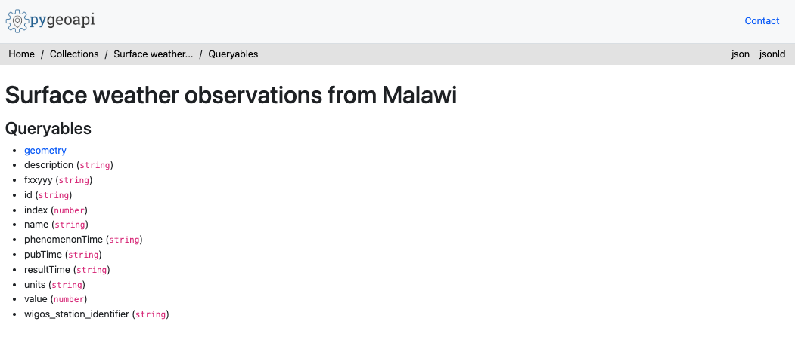

Consultando dados usando a API wis2box
Resultados de aprendizado
Ao final desta sessão prática, você será capaz de:
- usar a API wis2box para consultar e filtrar suas estações
- usar a API wis2box para consultar e filtrar seus dados
Introdução
A API wis2box fornece acesso de descoberta e consulta de maneira legível por máquina aos dados que foram ingeridos no wis2box. A API é baseada no padrão OGC API - Features e é implementada usando pygeoapi.
A API wis2box oferece acesso às seguintes coleções:
- Estações
- Metadados de descoberta
- Notificações de dados
- mais uma coleção por conjunto de dados configurado, que armazena a saída de bufr2geojson (o plugin
bufr2geojsonprecisa estar ativado na configuração de mapeamentos de dados para preencher os itens na coleção de conjunto de dados).
Nesta sessão prática, você aprenderá a usar a API de dados para navegar e consultar dados que foram ingeridos no wis2box.
Preparação
Note
Navegue até a página inicial da API wis2box no seu navegador web:
http://<your-host>/oapi

Inspecionando coleções
Da página inicial, clique no link 'Coleções'.
Question
Quantas coleções de conjuntos de dados você vê na página resultante? O que você acha que cada coleção representa?
Clique para revelar a resposta
Deveriam ser exibidas 4 coleções, incluindo "Estações", "Metadados de descoberta" e "Notificações de dados"
Inspecionando estações
Da página inicial, clique no link 'Coleções', depois clique no link 'Estações'.

Clique no link 'Navegar', depois clique no link 'json'.
Question
Quantas estações são retornadas? Compare esse número com a lista de estações em http://<your-host>/wis2box-webapp/station
Clique para revelar a resposta
O número de estações da API deve ser igual ao número de estações que você vê no webapp wis2box.
Question
Como podemos consultar por uma única estação (por exemplo, Balaka)?
Clique para revelar a resposta
Consulte a API com http://<your-host>/oapi/collections/stations/items?q=Balaka.
Note
O exemplo acima é baseado nos dados de teste do Malawi. Tente testar contra as estações que você inseriu como parte dos exercícios anteriores.
Inspecionando observações
Note
O exemplo acima é baseado nos dados de teste do Malawi. Tente testar contra a observação que você inseriu como parte dos exercícios.
Da página inicial, clique no link 'Coleções', depois clique no link 'Observações meteorológicas de superfície do Malawi'.

Clique no link 'Consultáveis'.

Question
Qual consultável seria usado para filtrar por identificador de estação?
Clique para revelar a resposta
O wigos_station_identifer é o consultável correto.
Navegue para a página anterior (ou seja, http://<your-host>/oapi/collections/urn:wmo:md:mwi:mwi_met_centre:surface-weather-observations)
Clique no link 'Navegar'.
Question
Como podemos visualizar a resposta JSON?
Clique para revelar a resposta
Clicando no link 'JSON' no canto superior direito da página, ou adicionando f=json à solicitação da API no navegador web.
Inspecione a resposta JSON das observações.
Question
Quantos registros são retornados?
Question
Como podemos limitar a resposta a 3 observações?
Clique para revelar a resposta
Adicione limit=3 à solicitação da API.
Question
Como podemos ordenar a resposta pelas observações mais recentes?
Clique para revelar a resposta
Adicione sortby=-resultTime à solicitação da API (observe o sinal - para denotar ordem decrescente). Para ordenar pelas observações mais antigas, atualize a solicitação para incluir sortby=resultTime.
Question
Como podemos filtrar as observações por uma única estação?
Clique para revelar a resposta
Adicione wigos_station_identifier=<WSI> à solicitação da API.
Question
Como podemos receber as observações como um CSV?
Clique para revelar a resposta
Adicione f=csv à solicitação da API.
Question
Como podemos mostrar uma única observação (id)?
Clique para revelar a resposta
Usando o identificador de recurso de uma solicitação da API contra as observações, consulte a API para http://<your-host>/oapi/collections/{collectionId}/items/{featureId}, onde {collectionId} é o nome da sua coleção de observações e {itemId} é o identificador da observação única de interesse.
Conclusão
Parabéns!
Nesta sessão prática, você aprendeu a:
- usar a API wis2box para consultar e filtrar suas estações
- usar a API wis2box para consultar e filtrar seus dados